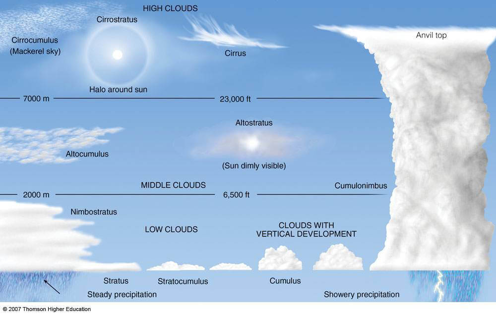

Predicting weather
We usually depend on easily accessible meteorological services and apps to tell us what the weather is going to be. If you have an Internet or a TV, then you can immediately know what to expect once you step outside the comfort of your house. But imagine for a second that the worst happens, all the systems go down, you have to evacuate quickly and survive in the wild, while depending only on your knowledge. In other words, you will need to know how to read the weather for your survival.
It’s actually quite possible to predict the weather by reading the signs that nature gives us. This is how our ancestors knew what weather to prepare for, long before the satellites, mobile phones and national weather services. And I’m not just talking about dressing for an upcoming rain, but also about being ready for more extreme weather conditions, such as hurricanes, floods, drought, and so forth.
Therefore it’s very obvious that, should you try to survive in the wild, weather becomes more than just a mundane inconvenience. Both your long term and immediate survival fully depends on reading the signs correctly, on translating the clues you see around you into a weather forecast. The next day’s weather might influence where and when you should make a shelter. For instance, if a flood is coming your way, then you will need to relocate to a higher ground.
Now that you understand the importance of reading the weather without any technological means, let’s go through actual information and tips.
The Sky is Your Friend in Weather Prediction
The sky is your number one friend, as far as reading the weather for survival is concerned. You can deduce what the weather is going to be by looking at the cloud formations, air pressure, the direction of the wind, and even at the way the moon looks in the sky. They will warn you when the weather is about to change, allowing you to prepare beforehand. We will talk more about them throughout this article.
The color of the sky can be a reliable indicator. A red sky in the evening, when the sun sets down, indicates that the following day is going to be clear and dry. This is due to the dust in the atmosphere, which colors the sunbeams red. The dust is pushed before a high pressure system, so expect a pleasant day tomorrow.
On the other hand, if the sky is red in the morning, then the sunrays are passing through moisture that comes with a low pressure front. In other words, red dawn signifies a nearby storm.
Rainbows can also serve as a weather forecast. If you are in the northern half of the planet and you look to the east, a rainbow spotted in that direction signifies an incoming rain. The reason for this is that in the northern hemisphere, the weather usually flows from east to west.
Paying attention to the sky is especially useful if you are taking one of those challenging survival vacations.
How You Can Read the Clouds to Predict the Weather
Quick detection of upcoming weather changes is an essential survival skill. Clouds can aid you in this task, they are always visible and can give you a lot of necessary information in a glance.
Generally speaking, white clouds that are high in the sky predict a clear and calm day. Rainstorm clouds look quite the opposite, they are heavy, dark and hang low. They also tend to come in clusters, creating a giant combination of black clouds. Heed their warning and get into your shelter ASAP, because it will start raining soon. Make sure your firewood is covered and stored in a dry place; it will warm you after the rain passes.
The presence of clouds can predict the morning temperature, too. If the night is cloudy, then the heat that rises from the earth is blocked by the clouds, which means that you should expect a warmer morning. A cloudless, clear night sky predicts a colder morning, since there was no cloud layer to trap the rising heat.
The clouds’ shapes are their most noticeable feature, which can be used to predict weather as well. There are 10 most common types of clouds, as you can see in the below image, courtesy of Thomson Higher Education. I will explain how every type relates to a certain weather.
High Clouds
• Cirrocumulus – these clouds are also known as “mackerel sky”, because they look like fish scales. They are a sign of a good weather and tend to appear after a storm. They usually vanish, leaving behind them a clear blue sky.
• Cirrostratus – this type of a cloud makes a halo around the moon or the sun. The cirrostratus clouds are very thin and made of ice. Noticeably large cirrostratus clouds usually mean a nice weather. If they are small, then prepare for a potential rain.
• Cirrus – these hazy clouds look like tails or hair, which gave them the common name of “mare’s tails”. Mostly a sign of a good weather.
Middle Clouds
◇ Altocumulus – these clouds look somewhat like the cirrocumulus, but they are usually thicker and more defined. They are also sometimes called “mackerel sky”. They can be seen after a storm and indicate a calm, clear weather.
◇ Altostratus – they resemble a murky mist or veiling. If these clouds cover the sun or the moon, then those appear as a watery circle. Should a rain come soon, the circle will vanish as the cloud grows darker and thicker.
Low Clouds
◇ Nimbostratus – this is a gloomy, low-hanging curtain of clouds, a predictor of precipitation that will drop on your location in 4-5 hours. Snow and rain fall for hours from this type of clouds.
◇ Stratus – the stratus clouds resemble a mist and they are the closest ones to the ground. They don’t bring rain, but might spray you with some drizzle. If you see them in the morning, then today’s weather is going to be just fine.
◇ Stratocumulus – these usually take over the whole sky. They are rolling low and seem somewhat lumpy, although the sun has no problem shining through them. The stratocumulus clouds can bring a brief, harmless shower, but they disappear during the afternoon hours, and you can enjoy clear skies during the night time.
◇ Cumulus – the “classic” shape of a cloud, they are white, puffy and have a flat base. When there is a good distance between every cloud, then the weather will be nice and comfortable. But if they grow several heads and also grow in size, then they might surprise you with an unexpected rain, so stay alert.
◇ Cumulonimbus – probably the most dangerous and ominous of all clouds. These towering giants drag with them the worst weather possible, such as fierce thunder storms, hail and powerful winds. The dark cumulonimbus clouds can reach thousands of feet in height! A storm is nothing to joke about, as some of the most amazing survival stories tell us.
The Wind and the Storm
Since we have already mentioned them, a few additional words about the relationship between the wind and the storm. If it’s raining, yet the wind’s strength does not change much, then the storm will be quite strong and lengthy. This kind of a storm is accompanied by a lot of clouds. The wind’s direction might also fluctuate during the storm.
However, if the wind started prior to the rain, then the storm is going to be tamer and will leave your area within a short period of time. A small storm of this kind tends to send less warnings before it comes, but it also leaves you alone much quicker.
Paying Attention to the Air Pressure
Air pressure is not as obvious as the clouds, but it can be a very useful factor in your personal weather forecast. If it’s low, it indicates a good chance of precipitation and clouds. If the air pressure is high, then clear sky and dry weather should be expected.
While air pressure is usually detected with a barometer, this instrument is not always available in a survival situation. Your low tech indicator for air pressure is the campfire’s smoke. If you see it rising evenly upwards, the pressure is high. But if the smoke seems to be whirling near the ground, then the pressure is low, which usually predicts precipitation in your area.
Weather Prediction by the Moon
While the moon is way out of our atmosphere and completely unaffected by Earth’s climate, the way it appears in the sky can be a useful weather-predicting hint. For instance, a hazy circle around the moon hints that we are to expect some precipitation. This is not an old wives’ tale, there is a logical reason behind this phenomenon. This ring around the moon is created by dust particles, which are accumulated in the atmosphere thanks to a low pressure system. The system carries the particles along, therefore you can expect snow or rain.
On the other hand, a bright, clear moon is a sure sign that there are no moisture or dust in the air. This is a mark of high pressure system, so expect the next day to be dry. As you can see, the moon really gives visual clues that help us foresee the next day’s weather.
How the Wind Can Help You Predict the Weather
Wind’s strength is often a sign of an upcoming weather. If the wind is blowing fiercely, it means that two different temperatures have collided, and a storm is coming your way soon. On the other hand, if the wind seems tame (whether it is steady or changing), then expect clear weather.
Wind’s direction is also helpful, especially if you’re aware what lies near you. Let’s say there is a desert to the south of your camp and a wind starts blowing from that direction. It means that a desert air is heading your way, so prepare for warm and dry weather. If the wind flows over the mountains, then you should expect some precipitation. This is due to the fact that the wind moved up the mountain and then descended along the other side into dry air. These changes will make the wind drop precipitation, so pay attention to it if you’re living near a mountain.
Remaining aware regarding any change in the wind is a good way to predict future conditions. For instance, if the wind was dry and constant and then suddenly dropped, expect some rain. Unless there is a fog in your area, in which case there will be no rain, but rather high condensation. Then again, if the wind starts blowing stronger and driving the mist away, you might be facing a rain after all.
The Temperature’s Direction is Another Hint Regarding the Weather
If you are in a survival situation in the wild, then just knowing whether it’s getting colder or warmer is not enough. Another tool in your weather prediction’s skill set should be paying attention to the trends in temperature’s direction.
The usual trend is familiar to us ever since we were kids. The sun rises, the day goes on, and the world becomes warmer. Then the noon passes, and around afternoon or evening the air cools down. That’s the natural state of things. At times, however, there are some changes that should be noticed.
For instance, imagine that the sun goes up in the morning, yet the temperature is getting lower. This should tell you that you are about to face a dry and cold front entering your environment. Predicting a cold front will help you to survive extreme cold weather. On the other hand, if it’s getting hotter when it shouldn’t, then you should definitely expect a rain and prepare for it.
How the Animals Can Help You Read the Weather
Animals can be seen everywhere in the wild or in your backyard, and the changes in their behavior are immediate and very noticeable. They have honed their instincts and senses for thousands of generations and are very attuned to weather fluctuations. If the animals sense a harmful weather approaching, such as the rain, you will notice that they sound, behave and feed differently than before. Here are some specific instances from the animal kingdom.
◇ If a storm is heading to your surroundings, cattle and other herd animals tend to move to higher grounds as well as make tight groups. Notice how all the members of these groups turn their heads in the same direction.
◇ Cows and horses possess a heightened sensitivity in the ears. They can sense changes in air pressure and act in a different way than before.
◇ The same can be said about the cats. They usually don’t wash their highly sensitive ears. But when the pressure gets lower (which means that a rainstorm may be heading your way), cats will start rubbing their ears as well.
◇ Turtles, just like the livestock, will move to a high ground if a big storm is coming to their area in the next 24-48 hours. You will see them crawling and sitting near the roads or other places where a rising water cannot reach them.
◇ Fish can also serve as an indicator of a nearing storm. They participate in a feeding frenzy close to the water surface, so that they have enough energy for later, to hide from the rain in the deep, where there is not much to eat. If you happen to catch more fish than usual, then this should indicate an approaching strong rain. Take shelter and prepare a nutritious fish dinner for the rainy day.
◇ Birds’ behavior is also a good weather predictor. They fly high in the sky to indicate that the weather will be fine in the next couple of days. If they fly closer to the ground, it means that the pressure is low, as their ears react to the air pressure changes. By the way, you can even hear the birds much better in a pre-rain air. But when a big storm is nearby, the birds will grow quiet and hide. This is very noticeable if you are near a coast and look at the seagulls.
◇ Just like the fish, birds feeding behavior will drastically change prior to the storm. You will notice them fighting for food at the feeder. This is because they also need to eat more and store extra energy to be used when they are hiding from the storm in the nests.
◇ Squirrels will display this behavior as well. If the storm is on its way, a squirrel will ceaselessly gather food and stock it for later.
Here is a video made by a meteorologist that tells about other weather-predicting animals:
Changes in animals’ appearances and behavior can also be used to predict long-term weather forecast.
◇ If a particularly cold winter season is expected, birds will migrate much sooner than they normally do.
◇ A bear’s fur is another sign of a harsh winter. If the brown stripe in the middle is thinner than usual, then the winter is going to be very tough. I will not advise, however, to actively look for bears as a source for the weather forecast.
◇ Instead, you can look at the fur of less threatening wild animals or the animals you have at home. Thick coats indicate low temperatures ahead. On the other hand, if the fur is shedding off in clumps, then a warm weather is nearby.
Trees and Plants Can Also Predict the Weather for You
Plants can also be your helpful friends, as far as weather forecast is concerned. When you leave your shelter in the morning, the first thing you should do is to look at the grass blades. A morning dew that appeared on them foretells dry weather for the rest of the day. If there is no dew, then there was a dry wind, which is also a sign of a storm system that followed it. So basically, no dew equals incoming rain. It’s hard to rely just on the dew if there was an actual rain during the previous night, so use other surrounding clues for your weather forecast.
The scent that plants release can also be a good indicator for an approaching rain. The plants produce a noticeable smell, since a combination of low pressure and moist air makes them discard their waste. This is what gives the air that distinctive pre-rain scent. A similar thing happens in the swamps, as their gasses are released when the air pressure is low. And that’s another sign that a rain is coming to your area.
Trees’ foliage can give visible hints about a future rain or storm. Notice how the leaves are curling up in such occasion. As for the pine cones, they usually open up when the air is dry, but humidity will make their scales close.
You can also use plants to predict the weather much further into the future. Plants’ growth alters according to the next season. Some crops (corn, onions, etc.) produce much tougher husks to protect the seeds from a particularly hard winter. Trees do the same, just notice the tougher acorn shells and bigger pinecones that form before a harsh winter season. Note these natural clues and prepare for a very challenging, cold winter.